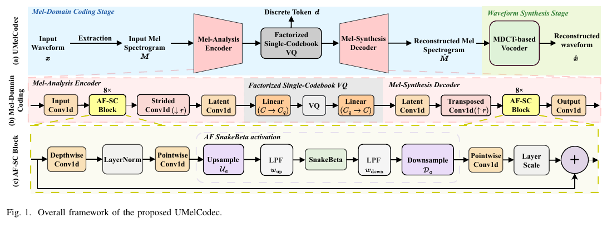
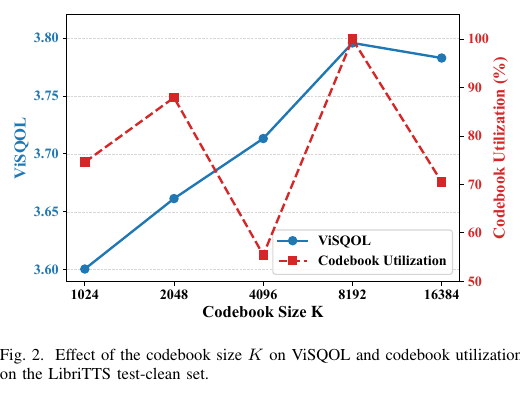

Mel-domain coding
AF-SC encoder and decoder backbones model temporal and harmonic structure around a factorized 8192-entry single codebook.
University of Science and Technology of China
Overview
Ultra-low-bitrate speech coding is crucial for bandwidth-constrained communication and compact storage, but preserving intelligibility, naturalness, and fine-grained acoustic details at bitrates of only a few hundred bps remains challenging. We propose UMelCodec, a purely acoustic neural speech codec operating in the mel domain at 325 bps with a lightweight architecture. Its mel-domain coding stage combines alias-free Snake-ConvNeXt backbones, a factorized single-codebook vector quantizer, and a multi-scale mel-spectrogram discriminator. A lightweight MDCT-based neural vocoder then predicts the MDCT spectrum from the reconstructed mel spectrogram and recovers the waveform through inverse MDCT. Experiments on LibriTTS show strong reconstruction quality, competitive subjective naturalness, and real-time inference on both GPU and CPU.

AF-SC encoder and decoder backbones model temporal and harmonic structure around a factorized 8192-entry single codebook.
The reconstructed mel spectrogram conditions a lightweight MelMDCT vocoder that predicts MDCT coefficients and applies inverse MDCT.
Experiment I
All systems operate at approximately 325 bps. DAC, BigCodec, and FMelCodec were retrained at a 25 Hz frame rate with an 8192-entry codebook; SemantiCodec and FocalCodec use their official checkpoints. UMelCodec samples use the MDCT-based vocoder described in the paper.
Experiment II
These samples isolate the effects of multi-scale mel adversarial supervision, alias-free filtering around SnakeBeta, and low-dimensional VQ factorization. Every codec variant uses the same MelMDCT waveform synthesis backend.
Experiment III
Increasing the codebook size improves ViSQOL up to 8192 entries, where the codebook is fully utilized. At 16384 entries, utilization drops and reconstruction quality slightly degrades. The listening samples below use the same utterances and MelMDCT backend across all codebook sizes.
